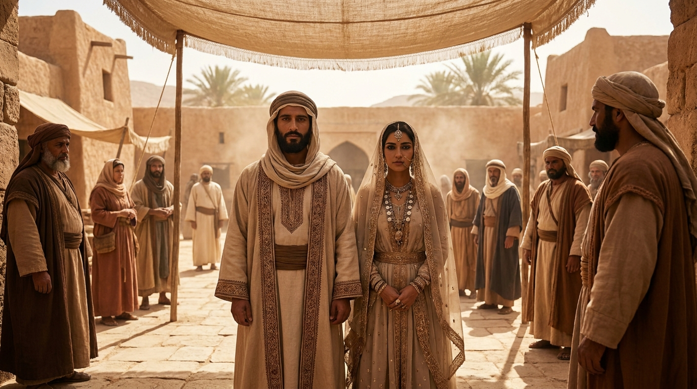

O Amor, a Intimidade e a Celebração
O livro de Cântico dos Cânticos (ou Cantares) é diferente de qualquer outro livro da Bíblia. Trata-se de um poema apaixonado e poético que celebra o amor romântico, a atração física e a beleza do casamento entre um homem e uma mulher. Ao longo da história da igreja, o livro também tem sido amplamente interpretado como uma bela alegoria do amor profundo, zeloso e inabalável que Deus tem pelo Seu povo.
Ficha Técnica
- Autor: Atribuído ao rei Salomão.
- Tema Principal: A beleza e a pureza do amor conjugal, a intimidade e a devoção mútua.
- Versículo-Chave: "Ponha-me como um selo sobre o seu coração, como um selo sobre o seu braço; pois o amor é tão forte quanto a morte... Nem muitas águas conseguem apagar o amor; os rios não conseguem levá-lo na correnteza." (Cânticos 8:6-7)
Estrutura
- O cortejo: Os desejos e o amor crescente antes do casamento (Caps. 1-3)
- O casamento: A celebração da união e da intimidade (Caps. 4-5)
- O amadurecimento: Superando distâncias e confirmando a força do amor (Caps. 5-8)